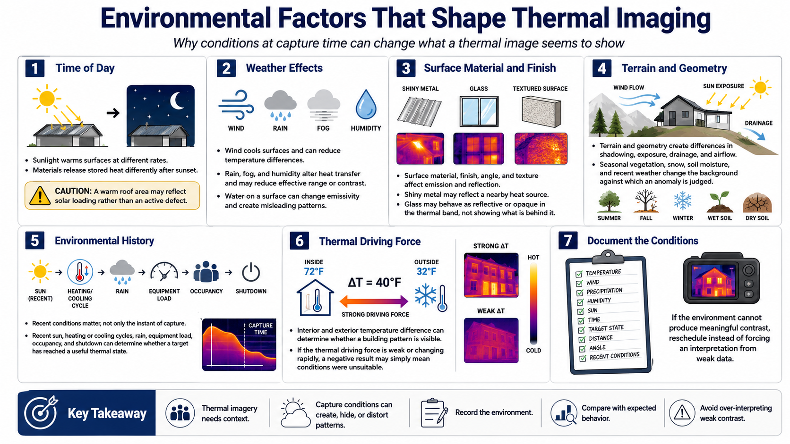

Environmental Effects
Connecting to LMS... Progress: in progress

Narration
Time of day strongly affects thermal patterns. Sunlight warms surfaces at different rates, and materials release stored heat differently after sunset. A warm roof area may reflect solar loading rather than an active defect.
Wind cools surfaces and can reduce temperature differences. Rain, fog, and humidity alter heat transfer and may reduce effective range or contrast. Water on a surface can change emissivity and create patterns unrelated to the suspected condition.
Surface material, finish, angle, and texture affect emission and reflection. Shiny metal may reflect a nearby heat source. Glass may behave as a reflective or opaque surface in the thermal band rather than revealing what is behind it.
Terrain and geometry create shadowing, exposure, drainage, and airflow differences. Seasonal vegetation, snow, soil moisture, and recent weather change the background against which an anomaly is judged.
Environmental history matters, not only conditions at capture time. Recent sun, heating or cooling cycles, rain, equipment load, occupancy, and shutdown can determine whether a target has reached a useful thermal state.
Interior and exterior temperature difference can also determine whether a building pattern is visible. If the thermal driving force is weak or changing rapidly, a negative result may simply mean the collection conditions were unsuitable.
Document temperature, wind, precipitation, humidity, sun, time, target state, distance, angle, and relevant recent conditions. If the environment cannot produce meaningful contrast, reschedule instead of forcing an interpretation from weak data.